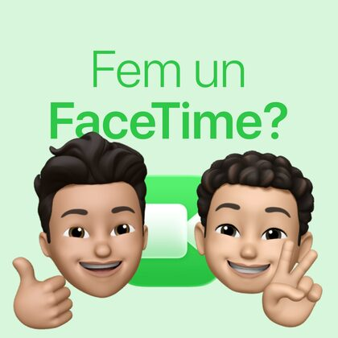

Les promeses de la tecnologia
Una conversa informal de FaceTime on ens posem al dia parlant de tecnologia, idees que semblaven revolucionàries i de les que, amb el temps, han acabat tenint sentit… o no.
Dues persones, una trucada i cap guió. Tecnologia, disseny, cafè, apps i qualsevol cosa que ens passi pel cap, sense presses i sense filtres.

Episodi 06
Una conversa informal de FaceTime on ens posem al dia parlant de tecnologia, confort, noves etapes de la vida i de com la tecnologia pot ajudar-nos —o complicar-nos— el dia a dia.
6 episodis · Nous episodis cada quinze dies
Una conversa informal de FaceTime on ens posem al dia parlant de tecnologia, idees que semblaven revolucionàries i de les que, amb el temps, han acabat tenint sentit… o no.
Una conversa informal de FaceTime on ens posem al dia parlant de tecnologia, intel·ligència artificial i de com, massa sovint, el futur encara no acaba d’arribar.
Una conversa informal de FaceTime on ens posem al dia parlant de tecnologia, sistemes absurds i preguntes que probablement no tenen una resposta clara.
Una conversa informal de FaceTime on ens posem al dia parlant de tecnologia, idees i petites reflexions del dia a dia.
En aquest primer episodi del podcast, fem una conversa informal de FaceTime on ens posem al dia parlant de tecnologia, mobilitat i petites reflexions del dia a dia.
Som en Dani i l'Uri, antics companys de feina i experience designers a Barcelona. Quan vam deixar de coincidir a la feina ens trobàvem a faltar, i el podcast va ser l'excusa perfecta per veure'ns cada setmana.
També hi havia curiositat de debò: com es fa un podcast? Quines eines hi ha? Així que vam començar a gravar les nostres trucades per compartir amb el món catalanoparlant els temes que ens obsessionen i que creiem que poden ressonar en més gent.
Daniel Morales (LinkedIn, s'obre en una pestanya nova)
Experience designer amb ànima d'enginyer i Apple fanboy declarat.
Oriol Valentí (LinkedIn, s'obre en una pestanya nova)
Experience designer, freak del cafè d'especialitat i de l'actualitat tecnològica.